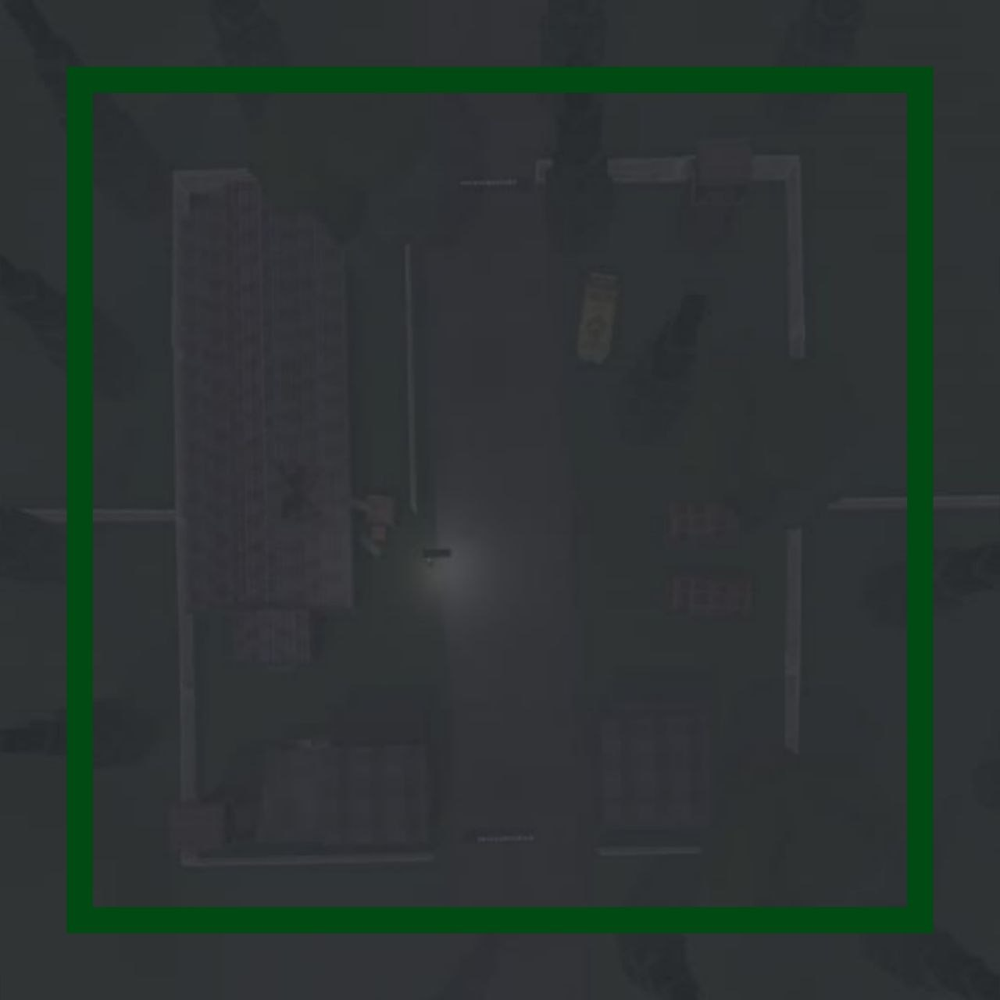
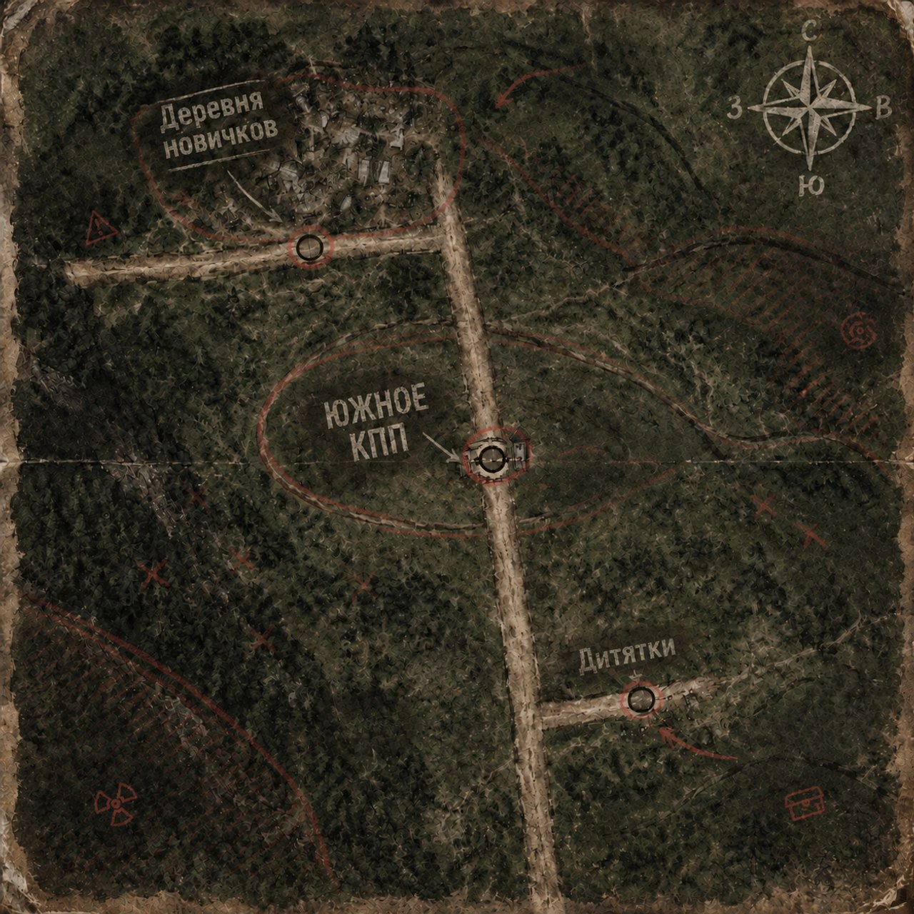

НАЧНИ СВОЮ
ИСТОРИЮ
HLRP · STALKER RP
Сталкер РП — это не стрелялки. Это Зона, где каждый ищет свой путь и судьбу, а не просто постреляться.
Раздел 1. Порог вхождения на сервер
Раздел 2. Общие правила
Раздел 3. Предупредительный выстрел
Раздел 4. Правила зелёных зон

Раздел 5. Правила рейдов и штурма
Раздел 6. Правила ГОП-СТОПОВ
Раздел 7. Общие запреты
📖 Лор Зоны
Слушай, новичок. Всё началось не с аварии, нет. Та, чернобыльская, была лишь ширмой.
1986 год. Сразу после взрыва сюда приехали не только ликвидаторы. В подземных бункерах открылись лаборатории. Учёные хотели дотянуться до ноосферы – до самого разума Земли, слышал такое? Они думали, что управляют мыслями, а на самом деле копали могилу.
2006 год. Грянул Первый Выброс. Это был не просто взрыв. Это был крик самой планеты. Зона родилась в тот миг – с аномалиями, которые плюют на законы физики, с мутантами, что и снятся только в кошмарах, и с артефактами, за которые люди убивают друг друга. А те учёные... они не умерли. Стали единым О-Сознанием. И создали Монолит, чтобы дурить сталкерам головы, уводя их от правды к центру.
2011 год. Зону лихорадило. Выбросы шли один за другим. Группировка «Чистое небо» отправила к ЧАЭС бойца по прозвищу Шрам. Им нужно было остановить одного настырного сталкера – Стрелка. Этот псих решил, что дойдёт до самого сердца. Шрам его ранил, но опоздал. Грянул Второй Сверхвыброс – и «Чистое небо» стёрло с карты Зоны.
2012 год. К нам пришёл Меченый. Он не помнил даже своего имени. Думал, что ищет этого самого Стрелка. А когда нашёл... понял, что Стрелок – это он сам. О-Сознание промыло ему мозги и сделало марионеткой. Но Меченый выстоял. Он уничтожил Выжигатель Мозгов, прорвался к центру и разбил купол Монолита. Открыл дорогу к ЧАЭС для всех – и для людей, и для тварей. Это был переломный год.
2012 год. Военные решили: «Хватит, Зона будет нашей». Операция «Фарватер». Послали вертолёты. Красиво, грозно... Ни один не вернулся. В Припять отправили майора Дегтярёва – умного, злого, с упёртым взглядом. Он раскопал, что вертушки побили новые аномалии. Вместе с тем же Стрелком он выбрался из города живым, а Стрелка потом пристроили к учёным. С тех пор его имя стало легендой.
А потом настала тишина. Не добрая, нет. Зубы скрежещет тишина.
Зона жила своей жизнью. Сталкеры шли за хабаром, «Долг» грызся со «Свободой» за то, что делать с этой землёй. Монолитовцы, которых Меченый вырубил из-под контроля, очнулись и бродили вокруг, потерянные, ища новую веру. Проходили годы. Кто-то умирал, кто-то уходил, кто-то сходил с ума. Зона менялась медленно, но неумолимо – как старый зверь, который зализывает раны и ждёт.
2020 год. За кордоном – своя жизнь, свои войны, свои беды. А здесь, внутри, всё осталось по-старому. Всё те же аномалии, те же твари, тот же запах горелого металла и мокрой земли по утрам. Никто не знает, что будет дальше. Зона молчит. И это молчание страшнее любого Выброса.
🗺️ Карта Зоны
Карта зоны на момент 2020 года.
